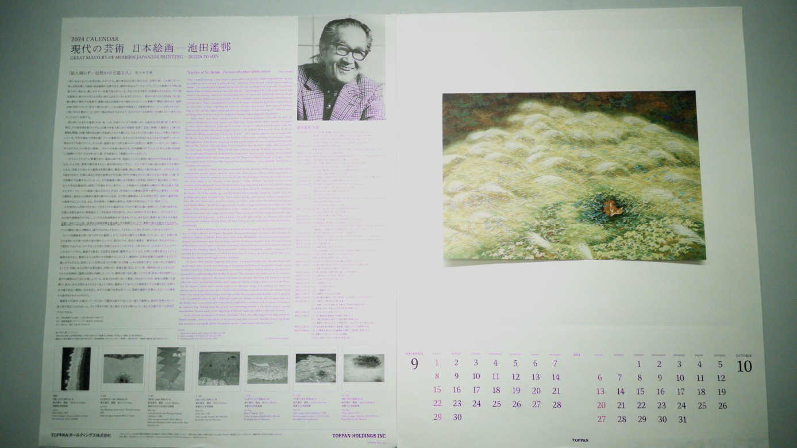

Ultra-high-resolution image sensors offer the potential to capture fine spatial details critical for many visual perception tasks, but acquiring and processing all pixels at full resolution is often infeasible under realistic bandwidth, latency, and power constraints. Existing approaches address this challenge through acquisition strategies such as spatial or temporal downsampling, which irrevocably discard information before task relevance can be assessed.
In this work, we introduce a real-time, predictive, and task-aware foveated imaging system that operates directly at image acquisition time. Leveraging emerging dual-stream sensor architectures, our method dynamically allocates limited pixel bandwidth to task-relevant regions of interest while maintaining a low-resolution global context. We formulate foveated acquisition as a sensor attention policy-learning problem, in which past observations guide actions that determine future measurements, closing the perception-acquisition loop.

Our policy-based foveated imaging framework operates in real time and decides where and when to sample full-resolution regions of interest (right) in a task-specific manner based on low-resolution full-field-of-view context frames (left, center) as well as past observations.
Through extensive simulation across multiple perception tasks, we demonstrate that our approach achieves high task performance under strict pixel budgets and significantly outperforms relevant baselines operating at the same bandwidth. We further validate our system on a 200-megapixel dual-stream sensor, capturing real-world videos under realistic bandwidth and latency constraints, demonstrating the practical feasibility of task-driven, acquisition-time foveated imaging.
@article{xiao2026foveated,
author = {Xiao, Howard and Ackermann, Jan and Deng, Boyang and Wetzstein, Gordon},
title = {Policy-based Foveated Imaging and Perception},
year = {2026},
}